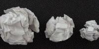
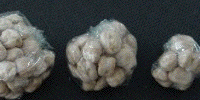

Paper Ball and Bean Bag Dimensions
Samples
Paper Ball Dimension
: crumpled up paper makes fractals. Every mistaken homework set winds up as a fractal.

Bean Bag Dimension
: on the other hand, bags of beans don't make fractals.

Return to
Paper Ball and Bean Bag Dimensions